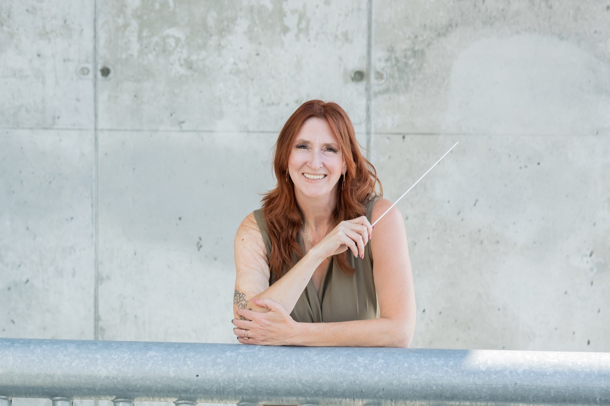

A free hub for parents, caregivers and educators
What Helps PDA & Neurodivergent Learners in Music and Beyond?
Advocating for usable supports, appropriate music inclusion and new or expanded music programs.
A growing resource: More strategies, classroom examples and videos are on the way. Save the educator library to find what’s available.
Are you trying to help educators understand your child, their neurodivergence or their PDA profile? Looking for words, research and practical tools to advocate for support? You’re in the right place.
Maybe you want your child appropriately included in an existing music class, want a current program used as part of their support plan, or want the school to add or expand music opportunities. Maybe you’re an educator looking for a better understanding of PDA and what useful support could look like in your classroom.
I’ve brought together conversational articles, research links, videos and practical resources you can read, share and use in those conversations. There’s a step-by-step parent guide if you’re wondering where to begin. No requirement to read the entire internet first.
Music is my starting point. We can hear learning happen, practise responding to mistakes and build ways for students to get what they need. That takes accessible environments and adult support. Those principles belong in general classrooms and other educational settings, too.
And music education matters in its own right. Every brain belongs in music.
Find a useful starting point
For families
“How do I help the school understand my child?” You know your child. Find words, research and practical tools to help you advocate for their needs and work with the school team on what might help.
Prepare for a school conversationSTART HERE
For educators & school leaders
“Where can I find something useful for my team?” A growing library of articles, classroom examples, printables and videos.
Open the educator libraryWhy Does Your School Need Music?
“What could music make possible here?” Explore the case for starting or expanding a program and appropriately including PDA and neurodivergent learners in existing classes.
Explore the case for music educationFor curious readers
“But what does the research actually say?” Pull up a chair. The original sources are here, including the bits that complicate the story.
Explore the evidenceExplore the Articles

I’m a music educator, special education specialist, neurodivergent person and parent, not a medical professional, psychologist or neuroscientist. I bring professional and lived experience, intense hyperfocus and internet access. These are research-informed educational ideas, not clinical advice.
Welcome to the ADHD rabbit hole. I brought sources. More about my perspective.
Big questions, research rabbit holes and practical ideas for the wonderfully complicated humans in our homes and classrooms. Pick whatever’s been on your mind.
ARTICLE
Why Do I Call PDA a Persistent Drive for Autonomy?
“What changes when we start with autonomy?” Why these words shape the questions I ask and the support I want schools to provide.
Jump down the rabbit holeLearning Without Shame: Why Failure First Matters
“What if ‘try again’ feels like one demand too many?” Let’s explore PDA, pressure and autonomy and how music can offer space to get things wrong, find support and try again.
Jump down the rabbit holeRead the articleCan You Worry and Sing at the Same Time?
“Can my brain’s worry committee take a coffee break?” Let’s explore singing, repetitive thoughts and what the research actually says.
Jump down the rabbit holeRead the articleThe Voice That Doesn’t Stop
“Why am I still replaying that conversation?” If your brain thinks it’s getting royalties, pull up a chair. Let’s talk about getting stuck and finding some room.
Jump down the rabbit holeRead the articleChanging the Internal Narrative Through Music
“I got it wrong. Does that mean I am wrong?” Let’s explore how music can offer a different story about learning.
Jump down the rabbit holeRead the articleUnderstanding PDA: A Persistent Drive for Autonomy
“What if ‘just do it’ isn’t helping?” Let’s talk demands, autonomy and what support can look like when more pressure isn’t the answer.
Jump down the rabbit holeRead the articleWhen Ability Isn’t Capacity
“But they did it yesterday.” Great. Today has entered the chat. Let’s unpack why ability and capacity aren’t the same thing.
Jump down the rabbit holeRead the articleMaslow Before Bloom
“Lovely lesson plan. Has everyone eaten?” Let’s talk about the human needs hiding behind the learning objectives.
Jump down the rabbit holeRead the articleWhen a Sticker Isn’t a Support
“What if another sticker isn’t the missing piece?” A sticker won’t make the room quieter. Let’s figure out what’s actually getting in the way.
Jump down the rabbit holeRead the articleWhy Does Your School Need Music?
“What could music make possible here?” A case for starting, expanding and opening up music programs for neurodivergent learners and everyone else.
Jump down the rabbit holeRead the articleMusic Is a Support, Not a Reward
“If music helps, why does it have to be earned?” Let’s explore how to advocate for access and bring that question into a school conversation.
Jump down the rabbit holeRead the articleFind the growing video library and teaching resources here
Watch: Understanding PDA
Sarah’s video explores demand avoidance, autonomy and educational support. Read the accompanying article for research context and limits.
Print and bring to a meeting
A parent advocacy packet, individual handouts, a six-week planning guide and a meeting checklist. Use the sample letter as a starting point for your own situation.
Choose your printablesUnderstand the student
Begin with the person’s interests, experience and barriers. A label alone cannot tell us which support will help.
PDA and autonomy · Ability and capacity“Want to see what I’ve been reading?”
The original studies, reviews and practical resources are here. Follow a topic that interests you, explore the work and make up your own mind.
Sources and Further ReadingKeep the practical toolkit close
The original program ideas, accessible teaching suggestions, six-week pilot, parent letter and free music tools remain available in the detailed toolkit.